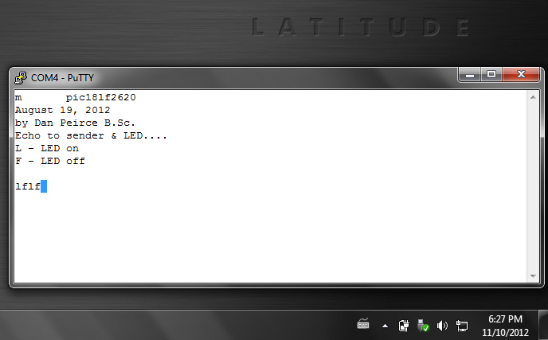
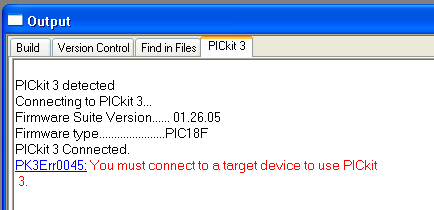

This page was relavent in the early years of the PHYS1600 course. The parts used have been revised more than once since this page was last updated.
A new page has been created for 2023.
pic18lf_sound_project -- moved some “other things of interest” not related to sound from that page to this page.
https://bitbucket.org/danpeirce/pic18_serial_io -- some basic code for testing the serial/USB interface is on that public page – branches of the project related to specific projects has not been added to that repository.
hello33 even more basic code used to test the USB to UART bridge.
by Dan Peirce
reformated from dokuwiki on July 20, 2013
uUSB-MB5 -- this board comes fully assembled as shown. (note on driver)
The uUSB-MB5 provides 3.3Vdc to the PIC18LF2620. The uUSB-MB5 has an on-board 3.3V regulator which converts the USB supplied nominal 5 V to the regulated 3.3volts. The regulator also provides short circuit and thermal protection. It can supply a maximum of 100 mA.
In APSC1299 the output of the power supply used floats relative to earth ground as long as the PICkit2 is not attached to the circuit. When the uUSB- MB5 is used power comes from the computer USB port. With a desktop computer the negative side of the supply does not float relative to ground. It is grounded. The oscilloscope ground clip is also grounded. Connected the oscilloscope ground clip to anything but the USB ground will cause a short circuit.
The situation is different when using a laptop powered from the battery. In this case the negative side of the supply is floating relative to earth ground. I tested one laptop with the charging power supply plugged in and found the USB ground was still floating.
More than one variant of the supply wiring has been tested. The external Oscillator used in testing
This is a five volt oscillator. In this variant of the wiring the positive rail at the bottom of the solderless breadboard is used for 5 V and the positive rail at the top of the breadboard is used for 3.3 volts.
Note that the PIC is tolerant of 5 volt inputs when powered at 3.3 volts! For student use the jumper wire from 5 volts out of the USB-MB5 could to the nearby power rail could be replaced by a 400 mA axial leaded fuse.

Rather then use the lower supply bus for 5 volts an alternative is to use just one row for 5 volts and keep both positive rails at 3.3 volts. We would like to minimize the use of the raw 5 volts.
Since the oscillator is at an RF frequency it is a good idea to keep the lead short. Building the oscillator on a little piece of protoboard facilitates this.


Signal from Oscillator when loaded by PIC is shown below. The external oscillator can be used when very precise time measurements are to be made. The internal oscillator is quite adequate for many applications.

I created a new branch on my git bitbucket repository to reflect the use of an external oscillator.
Screenshot of that link: (the other change not visible in this screen shot was that the call to set_osc_8MHz() was commented out in main.c.


In this case I have not used the 5 volt output from the USB-MB5.
<http://www.littelfuse.com/~/media/Files/Littelfuse/Technical%20Resources/Docu ments/Data%20Sheets/Littelfuse_Fuse_251_253_Datasheet.pdf>
Made use of existing program pic18_serial_io. That project was written for the PIC with interacting with a Raspberry Pi in mind but it will interact with a Windows PC just as well. Currently this program recognizes three commands.
“M” – sends a menu message - this was used for the test.
“L” – intended to turn on an LED.
“F” – intended to turn off an LED.
Note that to test the “L” and “F” commands a 200 ohm resistor should be connected to pin 15 of the PIC and the other end of the resistor should connect to the anode of a LED. The cathode of the LED is connected to ground.
The PIC will also echo any character it receives back over the serial link for a loop-back test. If it receives a ‘ it will add a’’. see https://bitbucket.org/danpeirce/pic18_serial_io/src/b8c10af1b10d/commands.c
Complete set of project files can be obtained from https://bitbucket.org/danpeirce/pic18_serial_io/get/b8c10af1b10d.zip.
Within these files the header file p18f2620.h is used. There is no p18lf2620.h file but from a the programming point of view the devices are equivalent. Also, when the project wizard was used to create the project file the PIC18F2620 device was selected. The resulting HEX file is still suitable for the PIC18LF2620.
On Windows XP I used hyperterminal. Windows 7 does not ship with hyperterminal.
I tested PuTTY.
I have been using PuTTY as a SSH client but it also works as a simple serial terminal.
This screen shot shows a PuTTY session connected to the PIC18LF2620 via the USB to serial bridge uUSB-MB5:
Note that the PuTTY terminal screen will be empty until something is typed on the computer (laptop). What ever is typed will be echoed to the screen (by the PIC) if everything is set-up correctly. Typing “m” sends the menu message (from the PIC): 
The following screen shots show the PuTTY settings:
PuTTY -> Connection -> Serial 
PuTTY -> Window -> Colours
Select Use System Colours to avoid getting white on black. 
PuTTY -> Session
Connection type must be selected as Serial 
Please note that when this was tested the connections between the PICkit3 and the PIC18LF2620 were as follows:

I am working on a plastic bracket with the intention of having it 3D printed. See https://github.com/danpeirce/bracket-breadboard#purpose-of-the-bracket-breadboard-scad-project

Once the OK is selected the device ID will be shown:
Device ID Revision = 00000007It is possible to read the source voltage:

If the PICkit3 pin2 is connected to the circuit and the circuit is powered from the USB connection it is essentially that Powering from the PICkit3 is not checked on the power tab!
With the PICkit2 we left the power connection open because we did not plan to power the board from the PICkit2 and it seemed to avoid the possible issue of someone inadvertently powering the board from the PICkit2. With the PICkit3 we still don’t want to power our board from the PICkit3 (and risk damage to it). It appears that with the PICkit3 it would not be easy to power the board from the PICkit3 unintentionally and as shown below leaving PIN2 open leads to many extra steps being necessary. This part is included for completeness – For the PICkit3 I recomend adding the wire from PIN2 to VDD.
Note that a PICkit2 will attempt to read the voltage on its pin2. If no voltage is pressent the firmware will assume that the target needs to be powered from the PICkit2’s supply. It appears that the firmware on the PICkit3 is different. If no voltage is sensed on pin2 it will give the following error:
PK3Err0045: You must connect a target device to use PICkit3.Perhaps a better error message would have said that no voltage was detected. One could use a wire from the board positive rail to the PICkit3 pin2 or one could use the following procedure which I worked out by trial and error.
The error:

Select Programmer -> Settings

Select the Power tab and set the voltage to 3.375 volts by dragging the slider. Also, ensure that the Power target circuit from PICkit3 check box is checked! When that is all done click on apply.
A warning message will pop up. It will say the same thing regardless if the voltage has been shifted down to 3.375 volts or not. The dialog box can be moved around so check that the voltage is set to 3.375. The checking is not essential if Pin2 of the PICkit3 is not actually connected to anything! Click on OK.
The PICkit3 firmware progresses and says shows the Device ID Revision = 00000007. At this point the MPlab IDE tools for interacting with the PIC device become viable, contain color and are responsive so the device can now be programmed.

Once printed the error message does not go away (unless it scrolls up out of view) but the new line with the device id is an indication that the MPlab IDE is now talking to the PIC18LF device.

In Phys1600 there will be some projects which are standalone. In these cases power from a USB port will not be available and a computer will not be available to display results. In those cases battery power will be needed. The LCD module that we typically use requires 5 VDC (the LCD is not required when attached to a laptop since we can run a terminal program on the laptop).
I found a suitable DC-DC converter that can provide a regulated 5 Volts out even when the input voltage is substantially less than 5 volts. See dc_to_dc_converter.
I have just started to look into the documentation of the PIC32 devices and the XC32 Compiler as of September 8, 2013.
There are a few DIP versions of PIC32 devices and the price is actually lower than the PIC18 device we have been using!
The XC32 compiler is a port of the GNU GCC compiler and is covered by the GPL. The functions in the hardware library are specific to Microchip devices and they are not covered by the GPL.
4D Systems makes small TFT LCDs with full color, built-in controller, sound, touch screen and SD-card interface. They package some in kits complete with serial interface to a raspberry pi. The displays could also be used with a microchip PIC.
See 4D_LCD
I have been looking at keypads. It appears one can get much better value purchasing a 3by4 keypad rather than a 4by4 keypad. It would actually be cheaper to have two 3by4 keypads on a project than one 4by4 so I’d recomend getting the 3by4. I expect the 3by4 ones are less expensive because they are sutiable for telephones.
this one looks like a good deal from a Canadian source:
Breakout Board for ADMP401 MEMS Microphone -- I used to think the Electret Microphones were small. This mems Microphone board contains the microphone and op amp circuit. The entire board with through hole solder pads is about the same size as an electret microphone. – --Overview of MEMS microphone technologies for consumer applications
Breakout Board for SC16IS750 I2C/SPI-to-UART IC -- while this is a real interesting little board and one could gain an extra USART interface, it would actually cost less and gain more functionality to connect to another PIC18LF2620!
Looks like this sparkfun breakout board has been discontinued. Breakout Board for SD-MMC Cards -- “With SD and MMC memory prices dropping, the time is right for mass storage and datalogging. This breakout board will allow you to breakout the SD/MMC socket to a standard .1” 11-pin header. Perfect for breadboarding and the likes. Board comes fully assembled and tested as shown." see http://www.maxim-ic.com/app-notes/index.mvp/id/3969
http://www.solarbotics.com/product/13200/ Looks like this one costs less and has more on it (changed link as old link was broken Nov. 21, 2012 – nothing stands still). Also, this is from a Canadian source.
Links to http://site.gravitech.us/MicroResearch/Others/SD-ADP/SDmanual.pdf
http://www.digikey.ca/product-detail/en/CB3LV-3C-8M0000/CTX264LVCT-ND/280258